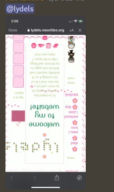
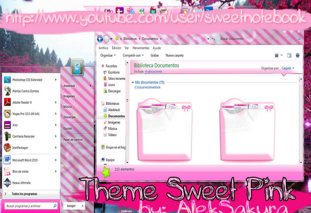
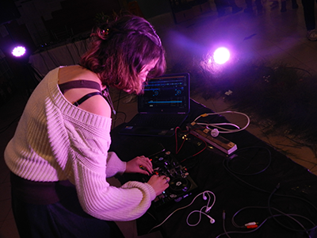
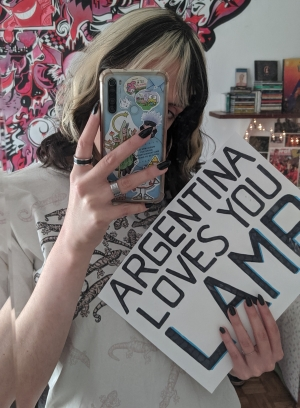
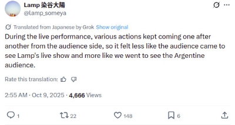
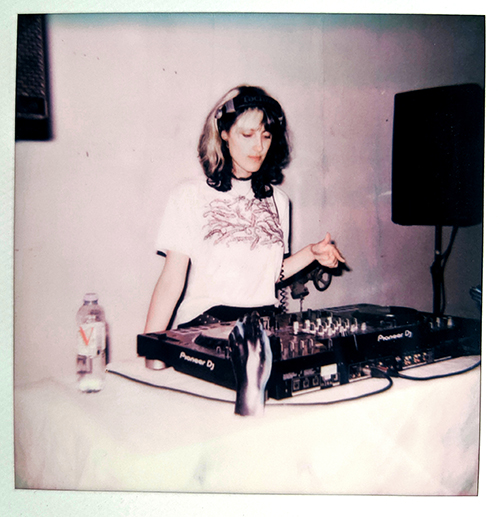

blog entry #1 - august 24th 2024
welcome to my website!
im very glad i started this little project! even tho it was frustrating at times (centering vertically im looking at u.....) i had a lot of fun :3 it gave me a reason to open photoshop after yearsss and to do some coding as well which i also missed..
one thing im just now realising is that most places where i can tell ppl to go check out my website are mobile apps and this website is NOT meant to be viewed on mobile lol...

WHY IS IT UPSIDE DOWN OMG i gotta work on a mobile version asap
so this site might not reach a lot of ppl for now lol but i dont mind keeping it as some sort of personal blog for the time being. i think i did a good job... it looks really pretty and im proud of it so that's what matters :P
i wanted to make a blog section bc i love writing pages and pages of text about things i like... and i thought it would be fun to write down my thoughts here instead of infodumping in my bf's dms at 3 am as usual its a good opportunity to get better at writing in english too :D
next entry i'd like to write about electronic music and what it means to me, as well as what's it like to be an electronic music enjoyer in a place w an almost non existent underground scene... theres also specific genres and artists i want to write about, as well as videogames and other things. but anyway!! i hope these reach the right people. and if they dont thats okay...
and finally i wanted to add some sites here that were useful in the making of this website, as well as give special thanks to the anne hero discord ppl bc i wouldn't know about neocities if it wasnt for them... especially thanks to malice who is always encouraging everyone to start their own website and has helped me out when i was just starting. also their site is so cool n they do an amazing job at archiving everything evanescence !
javascriptkit.com - cool free javascripts
pixelsafari.neocities.org - cute gifs!!
blinkies.cafe - customizable blinkies!!
tholman.com/cursor-effects/ - cursor trail effects
byebye!! see u soon
blog entry #2 - october 7th 2024
i love computers
computers have been interesting to me ever since i can remember.
we didnt have a computer at home when i was born (and having one wasnt really the norm in the early-mid 2000s in south america) but i remember being absolutely amazed by whichever ones i came across. i have faint memories of a colorful pc with games for kids we had at my kindergarten that i always ran to whenever they let us pick an activity to do, and i remember trying to use my grandparents' pc before i could even read what the popup signs on the screen were saying. my guess at that time was that they probably said that the computer would explode in 3 seconds so i ran away whenever i saw one :P it's hard to put into words how interacting with computers made me feel as a kid, especially with nostalgia glasses, but i think i was amazed, very curious and at the same time a little bit scared (maybe thats still how i feel in a way LOL) of these magic screens that i could not comprehend, predict or explain by any logic.
whatever my reason for being so obsessed w them was, wherever there was a computer, i would spend as much time as i could using it. whichever house i visited, i asked if they had a computer. i even feel bad remembering this because whenever i went to visit my grandparents, it was more like i was visiting the computer LOL i would literally spend all day in the small computer room doing god knows what!! probably using ms paint? or clicking on settings and messing everything up? or waiting 5 minutes for the images on the websites to load so i could play my silly little games? idk i was just happy to be able to use a computer!!
at some point we got a family pc! i don't remember much about it other than downloading photoshop on it at the age of 10 to make selena gomez edits LOL and i remember my parents not letting me use it for more than half an hour everyday for obvious reasons (it was about time honestly...) also they let me create a facebook account when i was 7 iirc? and i dont know what they were thinking Lol.
when i was in elementary school i got MY very first computer (for free! shoutout to public education and the government at that time) and it was, for me, a dream come true!! that silly little laptop with 2 gb of ram made me the happiest girl in 5th grade lmao. you mean this is MINE? for ME only? i downloaded tons of music, pictures of whatever i was a fan of at that time, and most importantly, i customized the SHIT out of it which was something my parents asked me Please not to do with the family computer. custom icons, custom cursor, custom font, and the pink-est Windows 7 theme i could find on deviantart. wish i had pictures but here are some old windows 7 themes i found that have the exact same vibe LOL.


(i still have this laptop lying around my house. its not turning on but i want to try and fix it whenever i have some free time... i would really love to see my old desktop one more time lol)
so now i have a desktop (still not mine only lol hopefully when i move out at some point) and a purple 7 year old laptop that i use almost every day, mostly for studying or coding this website :) i get to make music thanks to my computer, i get to make art, i get to talk to people thousands of kilometers away from me that i never would've talked to otherwise.
but that's not really the main reason why i like computers. after so many years of using them, customizing them, trying to fix them after downloading executables from the wrong sites, formatting them, installing all sorts of programs, games, drivers and stumbling upon the most random problems... i always feel that no computer problem is truly unsolvable. i'm sure there are exceptions (like when my parents forgot to do a backup of our family pictures before formatting the pc... though that arguably had a solution as well) but it's always kinda fun for me to fix pc problems because i feel like whatever problem i encounter, there is a solution, and i just have to find it somehow. and i think that's really cool... its almost like a puzzle where i have to piece together the information i got from 3 reddit threads, 2 quora questions and some obscure abandoned forum lol.
that last part is actually another reason why i like computers. it's the people! the people that made them, the people that understand them and explain them to me, the people who are out there fixing 2005 desktop pcs just for fun or because they remind them of their childhoods, the people that develop apps for a very specific purpose that probably only them and other 20 ppl will need but they post them on github anyway... i admire their work a lot!!
and then there's moments where this feeling of being able to solve anything is sometimes killed by the occasional unpredictability of computers, like getting a random blue screen out of nowhere or things just not working like they're supposed to when you're doing everything right. it makes me feel like no matter how experienced i am and no matter how much i know, i'll always be a little bit scared of computers. there will always be something about them that i cannot explain by any logic. and though frustrating at times, it's also probably the thing i like the most :3
blog entry #3 - december 11th 2024
first live lydels dj set ever yupppp
so the other day i saw there was an open call to participate in a small festival that students were organizing in my uni and i thought it would be a nice opportunity to do a dj set for the first time! i was a bit doubtful at first though because i was pretty sure that if they chose my project i was going to be the only dj there... and electronic music isnt super popular where i live, let alone the subgenres that i personally like... but then i said fuck it lets do it anyway lol so i sent them my music n stuff and they chose my project among other ones :3

i got there early and saw some of the other presentations and they were all quite experimental and weird so i felt a lot more comfortable with playing weird music knowing that LOL
and uhh the event itself was kind of a mess (it wasnt their fault really though) everything was wayyy past the schedule i was supposed to play around 10:30 pm and i ended up playing around 1:30 am.... and also by the time it was my turn the ppl organizing it were like hey we have to start cleaning n stuff because its way too late and we cant stay for much longer here... (also a lot of ppl were leaving too LOL there was probably around 30 people left by the time i finished setting up) and so they were like do you still wanna play or nah... and i doubted for a second bc i was sleepy n tired lol but my friends were there mainly to see me play so i was like yeah i'll do it and they were like aight...
so i played!! and i had a lot of fun!! it was quite a nice surprise because i always get nervous when i have to do presentations or literally anything in front of a group of people so i was expecting to feel the same way now BUT apparently i like DJing a lot because contrary to what i expected i did not get nervous at all! i was just having fun and vibing to the music i didnt feel anxious or scared at any point which is crazy to me lol
apparently the ppl that stuck around liked my set which im happy about! i was too concentrated on what i was doing so i didnt look up much but my parents (shoutout to them for helping me carry stuff) told me that people were dancing a Lotttt and also some ppl came to say they liked it after i was done :3 now that i think about it maybe it's better that there wasnt too many people there it wouldnt have had the same vibe idk...
shoutout to my friends who came all the way to my uni, stayed there for a Looooong time because everything got delayed and i ended up playing super late, yet they were there dancing during my set, helping me to set everything up before that and encouraging me to play anyways regardless of everything that was going on... idk what i would do without them!! i love yall!!
i want to do this more often... i'll try my best to keep playing shows!
blog entry #4 - march 26th 2025
how do you make art i forgor
i've been feeling kinda stuck when it comes to making music lately... i'd say i'm doing better now, but after i released my ep a few months ago i've been struggling to make music that i really connect with and that feels "genuine" to me. it's been kinda overwhelming to think about, so i'm gonna try to organize my thoughts on it:
first of all is probably the fact that i'm older now and i have to focus on college and probably getting a job sometime soon. i never really expected to be able to make a living from music (if it happens im not complaining at all though :P) so that's not really a problem in itself, but the fact that i'm only gonna be busier from now on makes me feel like i Have to make something good whenever i do have free time, or else i'm wasting it...
kind of related to that is the fact that i think i've grown and changed a lot as a person since 2022. the way i present myself has changed, the way i think about a lot of things has changed, the people i talk to and the communities i'm a part of have changed. and all of that has me wondering what my purpose for making music is. back when i first started that wasn't really on my mind at all. that's not necessarily a bad thing, i really just did it because it was fun and because it felt like the right thing to do. making music felt very natural to me, or at least i remember it that way. so sometimes i feel like i want to go back to that, but at the same time i think the reason i feel so stuck is in part because i want to explore something else with my music, and go further than "something i make for fun". the question is, what do i even want to explore? do i want to make more "meaningful", lyric/vocal oriented music? or do i want to make more danceable music that i can play in my dj sets? i think my music has always been hard to categorize and i've always played with elements of many different genres, which is something i like, but at the same time it makes it really hard to fit into any labels or collectives of other artists, always being too *something* for this label but not enough *something* for this other label. should i stick to one genre? is that even what I personally want or would i just be doing it to fit in somewhere? am i maybe just overthinking all of this and i should just shut up?? HOW DO I DO THAT help lol
it feels really cliche to describe because its a rabbit hole that i think most artists fall into at some point, but i'm not sure how to proceed from now on. i'll still be making music and hopefully figuring it out in the process but these are questions that are always in the back of my mind, and they've been for a long time...
lastly, the amount of plays in my songs is something that has never really affected me or the way i make music, but i do think i got a bit too lucky with the first songs i released lol... my second release ever got some attention thanks to someone adding me to their youtube mix (it has 1.2 MILLION plays on youtube as of now wtf) so it all happened very quickly, and i might have gotten the impression that getting my music heard was a lot easier than it actually is. dont get me wrong, i'm very very grateful to still have people sending me nice messages and listening to my music everyday, and honestly to even have 1 person doing that is enough for me. and also of course, i make music for myself, and i'm sure that if i had gotten 0 attention from the start i'd still be making music. but i do have moments of doubt when i think about making big projects (like an album...) because i can give it all of my efforts, pour my heart n soul into it, pay for some really nice cover art and such, and in the end, by the time i'm finally done, it might reach 2 people in total depending on how lucky i got algorithm wise lol. it would be a work i'd be super proud of regardless, of course, but i'd have no one to share it with, so it's a bit disheartening...
people from the US or other countries might read this and wonder why i only talk about online plays and labels and such and say "hey have you tried going outside and connecting with your local scene instead" and that's something i've been trying to do as much as i can (hopefully i'll start playing actual dj sets this year) but the electronic music scene is not big in argentina at all, let alone the dnb scene, LET ALONE the jungle scene. some cool guys from the small dnb community we have in buenos aires are being v nice to me and they've given me the opportunity to practice with CDJs for the first time, and we have some other things planned that im excited about. but the jungle scene is still almost nonexistent, so i'll have to work hard if i want to start playing sets and sharing jungle with people. im already overwhelmed dude im just some girl idk if im capable of carrying the responsibility of such a task LOL
so anyways... idk what the conclusion is... thank u if u read all of that and lmk if you've been through something similar bc i'd love to hear your thoughts :P
blog entry #5 - 4 de abril de 2025
TE AMO JUSTICE
ayer ví a justice en vivo!! y me gustó tanto que tenía muchas ganas de hablar de eso en este blog además de que fue el show más visualmente hermoso que vi, fue algo especialmente hermoso para mí porque amo mucho a justice desde que tengo como 15 años... me acuerdo d estar totalmente obsesionada con audio, video, disco (que sigue siendo mi álbum favorito de ellos) y mirarme el "documental" (es muy pedorro como para llamarlo así) de access all arenas, y me cuesta mucho procesar que esos mismos dos tipos son los que tuve enfrente ayer. jdngsdkjh TODAVÍA NO LO PUEDO CREERRR HICE UN CARTEL Y ME LO FIRMARON bueno más abajo hablo d eso.
realmente QUE PEDAZO DE SHOWWW!!!! yo había visto una parte de su presentación en el coachella y tenía una idea de cómo manejaban las luces y las visuales, pero ver todo eso en vivo es realmente una locura. parece UN SUEÑO, no puedo expresar lo agradecida q estoy de haber tenido la chance de ver algo así acá... no me imagino lo terrible que debe ser transportar esa cantidad de luces y equipamiento hasta sudamérica, y la verdad dudo que hayan sacado mucha ganancia de esto, así que gracias justice te amo mucho!!! gracias por darme la oportunidad de ver y escuchar algo tan hermoso  fue todo tan lindo que hasta los perdono por casi no haber pasado temas de audio video disco (en un momento pasaron un microsegundo de civilization y casi me muero)
fue todo tan lindo que hasta los perdono por casi no haber pasado temas de audio video disco (en un momento pasaron un microsegundo de civilization y casi me muero)
una cosa q me llamó la atención.. antes de ir estuve dudando de si ir para la valla o quedarme mas atrás, porque no sabía qué tan heavy iba a estar el público, y al final fue mil veces mas tranqui de lo q esperaba?? cuando fui a ver a phoenix (banda bastante más tranqui que justice) estuve aplastada todo el show por la gente que hacía pogo atrás (aun así el mejor día de mi vida no me quejo para nada) y me imaginé que con justice iba a ser peor, pero se ve que la audiencia era de edad millenial para arriba porque estando en valla y todo podía bailar y saltar con bastante espacio de sobra lowkey DEMASIADO tranquilos todos igual... amigo está sonando stress cáguense a palos un poco... ellos (xavier y gaspard) parecían estar contentos con el público igual, así que capaz no estuvo tan mal (o los de eeuu eran peores en comparación jsjdss)
cuestión que HICE UN CARTEL!!! no sabía si hacerlo xq sabía que iba a ser la única con un cartel y capaz era un poquito #cringe... pero creo q a la mayoría de artistas les copa bastante q alguien se tome el tiempo de hacer alguna cosa así para ellos, y es mi unica forma de decirles q amo mucho lo que hacen así que me mandé a hacerlo igual y me alegro mucho d haberlo hecho!! xavier me señaló desde el escenario y me pareció que gaspard me vió y me sonrió!! a mí con eso me alcanzaba y me sobraba realmente, PERO DESPUÉS... xavier bajó del escenario a firmarle un cd a la chica de al lado mío (lo estuvo sosteniendo todo el show, totalmente merecido) y me costó reaccionar por un par de segundos, porque tenía al mismísimo Xavier de rosnay enfrente mío y estaba por explotar Lol. pero al final me animé a acercarle el cartel, lo leyó y después me lo firmó lo mismo con gaspard después, y hasta me hizo una seña de gracias  WHY ARE YOU THANKING MEEE I SHOULD BE THANKING YOU!! a ambos les dije gracias lo mas fuerte q pude, por firmarme el cartel obvio, pero también se sintió como agradecerles por su musica que me acompaña y me hace bailar hace tantos años~ así que nada, no me lo voy a olvidar nunca... yo no podia creer que estas dos personas estaban realmente enfrente mío!! encima son un amor de personas, se quedaron un buen rato firmando cosas y se los veía re agradecidos y contentos con el show. así q espero q vuelvan pronto los amo xavier y gaspard
WHY ARE YOU THANKING MEEE I SHOULD BE THANKING YOU!! a ambos les dije gracias lo mas fuerte q pude, por firmarme el cartel obvio, pero también se sintió como agradecerles por su musica que me acompaña y me hace bailar hace tantos años~ así que nada, no me lo voy a olvidar nunca... yo no podia creer que estas dos personas estaban realmente enfrente mío!! encima son un amor de personas, se quedaron un buen rato firmando cosas y se los veía re agradecidos y contentos con el show. así q espero q vuelvan pronto los amo xavier y gaspard
no llegué a comprar nada de merch... quien sepa de un local q venda remeras de justice me avisa por favor (serious)...
blog entry #6 - may 28th 2025
read your favorite band's book it will heal your soul
so a while ago i bought my favorite band's book and i cannot explain how happy it makes me just to be able to hold it in my hands... i wrote a small section about it in my phoenix shrine already but i love this book so damn much that i wanted to expand on it in this blog. especially with earlier albums, knowing the reason why they made certain creative choices, or seeing what was going on with each member's lives while they were making an album made the music feel so much more alive, like there is a whole other layer to it. i thought it was really interesting how that feeling didnt really appear because they reveal some deep secret meaning or hidden concept in their projects, but rather the opposite. their music is and always has been a direct product of their experiences, their culture and upbringing, the music they listened to or that their friends were making, the places they visited. that's why it sounds so authentic and genuine, and why i think i connect with it. their music sounds so much like them, and each album is an expression of what they are, and what they were when they made it. it sorta unlocked something in my brain that made me start thinking about art differently, it reminded me of why people make art. kinda freed me from my writer's block LOL thank u phoenix... i've always been sorta obsessed with the meaning of my songs and making sure that i am expressing myself correctly so the message comes across, and then i listen to this band that has lyrics that sound like someone opened a dictionary and tried to rhyme the first 5 words they read and it reaches my heart like no other artist has ever did it. much to think about...
reading this book also made me realize another possible reason why my perception on their discography was sorta "flattened" and that is listening to music on spotify. when you click play on an artists' profile you're just listening to a list of songs. whether they're new or old, one comes after the other requiring no action from you. sometimes the dates are wrong so you don't even know how many years apart they were released. it's just a list of tracks, it is "content". now that that i'm reading this it's almost like rediscovering their music in a way, because i understand that music is so much more than something i see on a screen and listen to on my headphones. it's so obvious yet i think convenience and easy access to art made me forget about these things a little. so much work, effort, passion and attention to detail went into making each song. i know it's not like an album's lore comes included with a cd or a physical release, but i do think that maybe having a cd in your hands makes the music inside it feel more "real". maybe because it's easier to associate things that require time and effort to make with physical objects? or not. idk...
another thing that spotify has stolen from me: music videos lol. in the book they often tell stories from when they shot certain videos, so i started watching them to have a bit more context. i had forgotten how much i love music videos! it brought back memories of listening to my mom's playlist on youtube as a kid n watching the videos together. when i thought a bit more about it, it's another layer of depth that has been almost removed from music recently. no those stupid spotify tiktokified canvases or whatever don't count as music videos. the most interesting one is definitely whatever is going on in funky squaredance's music video. it's their weirdest and most stupid song with the weirdest most stupid video, so it makes sense, but i still didnt expect whatever it is that i watched LOL. i think it's amazing honestly... if you wanna spend 9 minutes watching it it's here. it is an experience for sure... (warning? maybe nsfw? theres a girl dancing in a bikini for a bit idk nothing too crazy) disclaimer this song is Not representative of phoenix's discography Lol
another thing that was super cool to read is how basically every french band around that time was friends with each other. it's interesting to think about how much of your success as an artist was based around going outside and talking to people back then. i'm not gonna act like some didn't have more money and probably more opportunities than others (phoenix is a band from versailles after all Lol) and that there were no disadvantages to everything happening in person, but i do love how most people involved in this specific era of french music were just contributing their part to a scene that they loved, and the thing that mattered the most if you wanted to participate in it was whether you could provide something fresh and cool and unique or not. thats it!
i'm reading this book slowly because i dont want it to end... it's so awesome and inspiring to be able to peep into the process of creating your favorite music. it is so awesome and inspiring to read about how much your favorite artists love what they do and what inspires them. i'm also honestly surprised by their pre-phoenix years and how much of a mess they were LOL. as i said in the shrine i knew there was more to them than what someone sees at first glance when they see their spotify page (me defending these 4 french white middle aged men from the lame band allegations) but i also didn't expect them being so cool... they are and always have been so confident and true to themselves in terms of creative choices, they care so much about music, they dont really give a shit about music industry standards. that is the coolest thing ever to me.
does this all mean that im gonna cancel my spotify subscription and buy every CD for every album i like... well i am not economically able to do that... but i do want to start listening to music more intentionally, listen to albums more, pay more attention to detail, learn about how the albums i like were made, understand the context in which they were released. i love music
blog entry #7 - june 22nd 2025
i am 23, in college, and still a fangirl
i turned 23 this week!  feels a bit old but at the same time i feel like i'm older than that. i feel like a LOT of time has passed since i was, like, 18. i know a lot of people hate birthdays but i really enjoy them!! got some awesome gifts from my bf and friends... i feel very lucky to have them... my friend made me a casette of jungle hits vol 1!! not only its a super cool gift but it also means a lot to me to have friends that know what i like, and that i can share the things i love with. it's really not that deep but ever since i started getting into things like electronic music or videogames when i was a teen, i had to get used to keeping my interests to myself because no one ever knew wtf i was talking about lol (they're not even that rare interests in other places but i think they are in latin america) so being able to talk to a friend irl about the music i listen to is crazy to me. and even crazier that someone would gift me such a cool thing as this without me asking for it!! so awesome...
feels a bit old but at the same time i feel like i'm older than that. i feel like a LOT of time has passed since i was, like, 18. i know a lot of people hate birthdays but i really enjoy them!! got some awesome gifts from my bf and friends... i feel very lucky to have them... my friend made me a casette of jungle hits vol 1!! not only its a super cool gift but it also means a lot to me to have friends that know what i like, and that i can share the things i love with. it's really not that deep but ever since i started getting into things like electronic music or videogames when i was a teen, i had to get used to keeping my interests to myself because no one ever knew wtf i was talking about lol (they're not even that rare interests in other places but i think they are in latin america) so being able to talk to a friend irl about the music i listen to is crazy to me. and even crazier that someone would gift me such a cool thing as this without me asking for it!! so awesome...
on a different topic... i feel like i usually manage just fine with balancing college and music but lately that has not really been the case LOL. i think i haven't been giving college all i could have, and what worries me is that it doesn't feel like it's 100% only because of not having enough time, but rather i've been feeling kinda... disconnected/unmotivated/distracted from anything college related recently. maybe it's just this one course that pisses me off, or maybe it's just a thing that happens sometimes as a college student. to be fair, it is really hard to keep my motivation up with how college works where i live. average time it takes to graduate from what i study is 9 years. yeah 9 fucking years lol and i'm 3 years in... also, with the economic and job situation in this country i don't even know if i'll be able to find a decent job if i do graduate (or if there will be any country left by then... OR WORLD okay im just kidding) i study this because i like it, not because of the job i'll get, but man it is hard to just keep going sometimes. especially when i have to do courses that are only tangentially related to what i actually want to study, and that feel like a massive waste of time and effort. i've been working on a lot of cool music related things recently that i'm very excited about too, so every time i sit down to study there is a part of me that tells me to fuck it and go and make art lol. the fact that i can't seem to find any cool people that i really vibe with in college doesn't help. WHERE ARE THE WEIRD NERDY PEOPLE!! THIS IS ENGINEERING WHY ARE YOU ALL SO BORINGGGG!! uhh so i don't know.. i'm just so tired man lol. there are so many damn courses, i'm 3 years in and i feel like i'm still in the introduction part of the... major??? that's not the correct word but i really dont know wtf the term to describe what i'm studying is in english. i struggle so much to explain this to americans LOL.
college topic aside, i feel pretty good! i feel very inspired and i've been REALLY obsessed with music lately, which i feel like hasn't really happened since i was a teen... i love many things and i love them all the time, but there's usually That One thing in my mind that i cannot stop talking about and that makes me happy just thinking about it. for a long time ever since i've found them (like 5 years ago?) that was always some videogame or manga. and now it is music again for some reason!! especially phoenix i really dont know why but i am so fucking obsessed with this band right now LOL. i will be probably expanding the shrine soon!! i think it's funny how i thought i would outgrow these sorts of fangirl feelings when i was younger yet they are still exactly the same, except i get them for different things now. i hope i never stop getting this pure feeling of joy by just thinking about the things that i love. it's one of the things i like the most about myself, because it motivates me to create art, to express myself, and to spread the love that i feel.
blog entry #8 - august 28th 2025
maybe we aren't THAT far from social media
i really love neocities, i love personal websites, i love that we can have our fully customizable spaces on the internet, and the fact that people make the decision to make their own websites at all is something that i'm always happy about. however... sometimes i kinda wish we weren't So focused on the design aspect of it. i know it is super fun to make new designs for your site, i of course pay a lot of attention to that as well with my own. but the design is only a way to visually support the content inside it, which is, most of the times, a ton of text about things that are important to me. i'm not saying this has to be true for everyone else and if you only enjoy making fun designs then that's fine. but if we are all here trying to get out of social media and meaningless interactions, maybe we could go a bit further than just making and looking at pretty collages? this is not aimed at anyone in particular, it just makes me a bit sad whenever i see someone pour their heart into a really interesting writing on their blog, shrine, music review, or whatever, and i see a lot less people engaging or commenting on it as they would with a new flashy design. it's not weird that this happens, it's obviously easier to look at something pretty than to spend 5 or 10 minutes reading a blog. i'm not asking for everyone to start reading every blog entry that shows on their feed, but i still think it wouldn't hurt for people to start paying more attention to the content on websites more. aren't the nicest comments to receive the ones where someone says they also love that thing you talked about, or that they relate to what you wrote about in your blog? it's something we don't expect from the internet, to have someone dedicate a few minutes of their time to read what some random person on the internet has to say, instead of looking for instant visual stimulation without any further engagement. and that's why i think it's so important! the fact that there are people who take the time to read what others post at all is already a blessing honestly, but i'm sure there could be a lot more.
i am still unlearning a lot of things myself, i don't mean to judge too much. i honestly don't think most of the people in neocities are intentionally not reading blogs and such. this is not social media, but i'm sure a lot of social media behaviors inevitably stay in our brains. maybe it's something that takes time, i definitely write and read a lot more now than when i just started. or maybe people read blogs more than i thought and just don't comment?
also, start writing more! please write about literally whatever! when i made this site and i started trying to write anything longer than 3 sentences after years of communicating through social media, i noticed that i had almost lost (or maybe never really acquired) the ability to express myself, to describe the things i like and don't like and to identify why i feel that way about them. being able to do that allowed me to be more critical of the things that i play, read or watch, so i'm really grateful that i pushed myself to write more. PLEASE WRITE! i want to learn about something you really like, i wanna know your thoughts on that game you played, i want to know the lore of your OC, why you made that piece of art, or why you ship those two characters who were only on screen together once Lol. it can be anything. i just feel like we could be having really awesome conversations and we could be learning more about a ton of different things and people. we could take this distance we have from social media a little further, i think. cute looking websites are great, but having your design evolve along with your writing and the content of your site is greater, at least to me. maybe if you're thinking about redesigning your index for the 50th time, try writing that review that you said you would write back in the first version of your site instead. i know neocities' comment system sucks so i understand why people avoid using that Lol but we can still try to have interactions that go further than "hey this looks cool" you know...
here are some cool blogs that i had fun reading/learned something from:
brosgetstoked.neocities.org/guides - cool writings about technology, videogames...
tofokyo.com/blog - really interesting entries about retro tech
maliceinwonderland.nekoweb.org/guide - malice's online survival guide
annehero.neocities.org/blog - anne hero's blog. so many cool entries about fashion, music, life in general...
anyways that's it for now!! just some thoughts i wanted to write down somewhere
blog entry #9 - october 9th 2025
live laugh love lamp
concert blog time!! i am gonna be honest when i saw the announcement that lamp was coming to argentina i knew a total of 1 songs by them ("a toshi no aki") but like... japanese indie bands aren't really coming here every day and this could've been the only chance to ever see them live, so i was like well i'll listen to more of their music and if i like it i'll go. and i did like it and i did go
they were really really awesome! i was so impressed by nagai's vocals, they were so so perfect it was crazy... i think kaori had a cold or something but she was amazing too. i cant believe how she switches from transverse flute to vocals so smoothly wow... and ofc someya's guitar playing was on point! they're all awesome musicians, their tour band included! there were so many instruments and musicians on stage that they were able to replicate the sounds in their songs really really well, some songs almost sounded like studio versions.
sorry but i wanted to complain about the crowd a little bit LOL it was good towards the end of the show, but it was also a bit weird which was a shame? not the most comfortable i've felt at a show... around 20 minutes after entering the venue (the band wasnt playing yet) this girl started pushing people to get to the front then proceeded to sneeze without covering her nose all over my arm (like it was WET... fucking disgustinggg) and not apologize or acknowledge it whatsoever. never wanted to kill someone so bad istg. also during the concert she SHUSHED people who were cheering??? girl this is a concert not a library??? GO HOME!! it was weird in the sense that it seemed like a lot of people there were not concert people. our crowds are known for being super lively, dancing, singing even when you don't know the lyrics. yet when the concert started i felt so out of place being the only one dancing and singing lol... everyone was standing STILL while recording with their phones or something... not even raising their hands! I COULD HEAR MYSELF WHEN I SANG that's how you know it's bad!! i understand that this is an indie bossa nova band not a punk show but like omg it was sad for what i'm used to lol. i also stood out pretty noticeably as a tall person in the sea of small girls that was the crowd so i felt a lil embarassed to dance or do too much  never experienced a crowd like that before... at least the fact that it was mostly girls with pretty outfits meant that it smelled like perfume LOL.
never experienced a crowd like that before... at least the fact that it was mostly girls with pretty outfits meant that it smelled like perfume LOL.

but about the good parts! the crowd WAS really loud in between songs, and the times when the band interacted with the crowd were so cute. kaori said buenas noches and presented all of the band members in spanish!! literally no other band i've seen live has made such an effort with spanish for us lol it was so nice... nagai said gracias a bunch of times too, and said that buenos aires is a beautiful city with kind people. i made a sign because you know im the sign girl at concerts... and both kaori and someya smiled at me yay!!
people in the crowd would yell stuff in japanese to them and i was so scared someone would say something offensive or overfamiliar out of ignorance lol but apparently not because they laughed and/or replied to what people said all the time! people gave them some really cute gifts too. they gave them a sign with all of the signatures of the ppl that were in the queue, a knitted sweater, and a box of chocolates. they were surprised of how energetic we were, and it seemed like they were very happy to be here. someya said they never speak so much on stage even in japan LOL. it must be a crazy contrast between latin american and asian crowds. he also said he hopes they can come back some day!

overall it was really nice and i hope to see them again some day! very happy for their international success because they deserve it, and i hope they get to tour around the world many more times :)
blog entry #10 - october 31st 2025
my debut album is done AAAAAAAAAAAA
so after months n months of working on it i think i'm finally ready to just release this thing!! took a bit longer than i would've liked to since i literally redid a song from scratch because i realized i did not like it lol but i somehow did it!! it feels unreal...
this might not be such an insane feat to other people but i'm Very slow at making and releasing music for a bunch of reasons... not only because of not having enough time, but mostly because of how annoying i am about releasing music in general LOL. i don't like releasing music too often. i like giving each release its time to shine and to develop a "personality" if that makes sense, for me and for whoever listens to it. and for this i also want each of my releases to mean something to me, to be special for one reason or another. kind of a silly belief to have right now when the music industry is all about releasing as many singles as you possibly can in hopes the algorithm will like some of it, but that's exactly why i'm doing the opposite thing lol. this is not algorithm friendly music this is LYDELS music !!! so anyway... the idea of making 8 or 9 songs that all fit this criteria was always so distant to me. it would either imply taking years to make an album, or ending up with something i wouldn't be fully satisfied with. but this year something changed in my brain about the way i think about music and albums and it gave me the push i needed to finally go ahead and do it, and i'm very happy! i will talk about the album itself more in detail soon, i plan to make a dedicated page for it :D and i will be able to share the awesome artwork that was made for it...
not to be all negative when something so exicting is happening but its times like these when i wish i had artist friends who i could share this excitement with... it's not like my friends n loved ones won't listen to it but it's hard to explain why this is such a big deal to people LOL they're like oh cool you're releasing new stuff! and well technically yes... but also it's so much more than just that... and i never thought about it but i guess i'm so used to not sharing much about my music that people around me aren't really aware of how much time and effort i put into this, or why i do it well i kinda don't want to explain my lyrics to my friends and family so maybe it's for the better that they don't know much about it LOL. its okay... i have accepted at this point that for Whatever reason making and releasing music will probably always be something lonely for me. i make music because it makes me happy obviously but then something like this happens that reminds me of the things i don't have and i'm like oughhh...
in a more positive note, i think that if i didn't start this site i wouldn't have made this album lol. making this website genuinely makes me so happy and i learned so much about myself and about the things i like thanks to it... i learned to appreciate albums more which made me want to make my own. i learned more about my favorite artists and bands which inspired me to tell my story just like they did. this album is dedicated to them, and to me as well. i hope that whoever listens to it can feel at least a little of the huge amount of love that was put into it. also not only i have to like do a billion things for the release of this album but i also have to practice for an upcoming dj set And keep up with college so please pray that i will not go bald from stress by the time this album releases!! Yay!!!!
i know this isn't gonna reach everyone but i want to also thank everyone who reads these blogs, everyone who leaves nice messages on my profile or guestbook, about both my music or just my site in general... as i said i do all of this for myself and because i love it, but it sure feels nice to know that there are people out there who care, and who cheer for you along the way. thank you so much
blog entry #11 - december 1st 2025
im tired and anxious but at least i make cool music
a lot has happened lately, good and bad... good news first, i did my debut DJ set at a proper dnb event around a week ago!! last year i wrote about doing a small set w my tiny controller at a small college event, but this was my first time playing on a CDJ in front of people who actually know what's going on LOL so it is kind of a big deal...

it was really fun! i was the opener so not a lot of people were there when i started playing, it was basically just my friends (which im very thankful for... i didnt fuck up terribly but i easily could have, being my first time) but a lot more people started showing up later on. i felt a bit more pressure as more people arrived but i stil managed to do a pretty solid set i think... this is mainly a liquid drum n bass event and my selection was mostly jungle, so i had moments where i was scared no one would fw the music i was playing LOL. but according to friends & my parents that were there, people were dancing n vibing to it! either way, if i am able to convert just 1 dnb head into a jungle lover my job is done. i personally danced a lot, it was all bangers to me so i gotta trust my own vision a little bit too... vibes and other less technical things aside, i've gotten pretty comfortable with CDJs i think, which im happy about! to think they were so scary to me a few months ago. my set was about an hour and a half long! probably a bit more. i had a playlist with the tracks i wanted to play but it ended up being too short so i freestyled the last 20 minutes or so lol. then my set ended and all my friends hugged me at once which mightve looked really silly but i dont care LOL and i am very thankful for their support. i wouldnt have been able to do this without my friends and boyfriend. the pic on top was taken by daniandphotos! muchas gracias!
ok now the boring ugly sad stuff begins you have been warned. i wasn't really that nervous during my set but for some reason the two days prior were terrible in terms of anxiety... honestly that week was hell like probably the most stressed i've been ever... i had an important college exam on tuesday, for wednesday i had to finish an assignment for another class in order to pass it, friday was my debut album release and then sunday was my debut DJ set. it was a lot. the album release might not seem like much work but i think that after not using social media regularly for a while i forgot how overstimulating it is, i wanted to delete everything and disappear from the internet so bad LOL. i somehow handled all of it... sort of... not in the best way apparently because i've been having heart palpitations all day for a week straight after this man... just when i thought i could relax and play videogames all day after dealing w my responsibilities this shit happens. im so mad...
so yeah it's been a little rough... my anxiety has definitely manifested in annoying ways many times but this is just Hell. it's such a bummer too because there were other cool things that i wanted to do for the album, like printing stickers or posters to put up around the city, but this has drained all of my energy. well... it's been a week already and i have stuff to do so i'll try to go back to normal activities litte by little... starting by updating my webring lol i'm sorry for the delay new members!!
thank you so much to everyone who took the time to listen to my album, it really means the world to me. i hope you guys have a nice december!
blog entry #12 - december 20th 2025
man i do not give a shit about AI generated art
i've been wanting to write down some thoughts on generative AI for a while. i was mainly thinking about music, but most of it applies to everything else. i think i never really paid much attention to it because in my personal opinion it's a lot less culturally relevant than a lot of people make it to be (it is of course relevant in other aspects but that's not what i'm gonna focus on here) but after i had a conversation with a musician the other day i realized that a lot of people, and most importantly artists themselves, are missing the point completely when discussing this sorta thing.
this person that i talked to has been making electronic music for years (the festival edm kind of electronic music) and they were super worried about AI generated music, not in general, but specifically about it getting "better" and almost indistinguishable from something that a real person made, to the point that he thought that it would be able to "replace" it. they showed me a comment of someone naming their favorite AI artist as an example that it was already happening and such, and that was so crazy to me because... why do you even make art if you think it's "replaceable"? what is the point if you see no difference between something a person and a computer made? and what is it exactly that we're losing here? if my music is "replaceable" to someone, then that's not a person that i want listening to my music anyway. they don't get it, it's not for them and it will never be. fuck that guy and his favorite AI artist lol i literally could not care less about "losing" someone like that!
at one point they said that what the AI made was "better" than what he could make after years of making music... and i know this is a pretty extreme take, and that most artists wouldn't go as far as saying that AI will actually replace them because of this. but i do see artists implying this probably unintentionally very often, especially in social media, and i think a lot of people need to understand that it's not about these AI generated things being "good" or "bad". our way to defend art cannot be quoting some AI generated video and saying "this looks like shit" not only because you're bringing attention to it by interacting, but let's also say that for whatever reason the generated content was "good" (if that even has a meaning in the context of art) let's say it looked fine and the composition is decent and whatever else you think makes art "good". did anyone learn anything from it? did anyone put thought, intention and creative vision into it? was time and effort spent in making this? no! it does not matter. no one has gained anything from the existence of this thing online. the people who saw it probably didn't look at it for more than two seconds. the person who generated it still cannot make art and will most likely not create any art ever. literally nothing happened and nothing changed. except probably a lot of water was wasted. so why would you care so much about the quality of it? why would you even spend time engaging with something like that? humans make a lot of "bad" art. computers might make a lot of "good" art. these are completely unrelated things and they don't affect each other.
another thing we have to do less is getting into a philosophical discussion of what "art" is. not because it cannot be something interesting to discuss, but we cannot keep getting lost in these subjective topics if we're trying to defend artists, because it's not gonna take us anywhere. separating art between real and fake as a defending point against people saying that "ai art will replace real artists" is most definitely not worth getting to that point, because the whole argument is irrelevant and makes no sense from the beggining. art made by people cannot be replaced because there is nothing to replace, and i don't think we're ready to approach any deeper discussions until the other person understands that first. you can't replace learning how to make art by generating some. these are two different things.
this is obviously not to say that you shouldn't stand against AI and be vocal about it, there are many other very valid reasons (mainly environmental) why we should be concerned, that aren't related to our value as artists! but by interacting directly with it you're not helping! at all! and so what CAN you do then instead of fighting twitter blue accounts? you can support real artists! go to local shows in your area, talk to people and get to know real artists, check out your friend's art or your friend's friend's art, search for art and music by asking for recommendations or do your own research instead of relying on algorithms to do everything for you. (algorithms love AI! the owners of these platforms don't have to pay real people if you listen to music that a computer generated instead) not only you're protecting yourself against AI by doing this, but you're also gonna have a lot more fun, meet people and learn a lot more along the way! this person i was talking about at the start of the post was also concerned that we wouldn't be able to differentiate between real artists and ai "artists" anymore, and the solution is as simple as surrounding yourself with people who care about art as much as you do. of course you're gonna think you're replaceable if no one around you cares where the music they listen to comes from. also, i think people who generate AI art are too proud about it to keep it a secret for too long anyway lol...
in the end i wasn't really able to get this person to understand my point, and they were still really confused as to why i didn't see AI as a threat that directly affects me and my art. but for me it's very simple. i don't see how the 1 billion gigabytes of bullshit being generated every minute by a machine relates to me doing what i enjoy and pouring my heart and soul into my art. because there is no correlation at all! artists will always exist because people want to make art, either because it's fun or because they want to learn a new skill or because they feel like they can show a bit of their heart to the world through it. and so it will never be replaced. all reasons to make art are valid, as long as you're the one making it. that's the only way you can actually "make" art.
blog entry #13 - march 17th 2026
about being parasocial, being sad as FUCK, and being a little better
first post blog in 3 months yeahhh!!! i wanted my next blog entry to be sorta like the one i posted in december, basically a big writing about some topic that i find interesting and want to give my opinion on. however it's not gonna be the case LOL. it's just been a very very weird couple of months and i kinda don't want to pretend like nothing happened... i think i always try to avoid writing about Not doing well on this site, which wouldn't be a bad thing if the only reason why was that there are Evil and Weird people on the internet that can read what i post, but deep down i also think that i don't want to seem "weak" to others i guess and i want to change that lol. it's so dumb because i'm always yapping and yapping about fake online personas and i'm always praising artists that are openly emotional and sincere, yet when it comes to myself i noticed that i'm constantly trying to hide the ugly parts of myself and my brain from a lot of people, especially online. i mean, sort of. the thing is, i've never had too many people to hide anything from because i don't think i've ever had more than 2 digits of followers in any sort of social media lmao. but this site has been getting a lot of views recently for some reason, and it feels a little bit weird, especially since it has aligned with probably my worst mental health moment ever LOL. it's not like getting attention online is necessarily a bad thing, but i do think this is a good time to write this post. i want to show that i am all of those cool things i post as well as a person who goes through stuff and has very shitty days or weeks or months. maybe it sounds like i'm making it a bigger deal than it actually is lol but with how parasocial the internet has gotten, it's more of a reminder to myself than anything else, a reminder of what this website is meant to be. being online, especially with my own personalized site like this, implies that people will inevitably perceive me a certain way. and when i think about the years i've been online for, and the countless times i've unconsciously made up images of people in my head based on the way that they wrote or the pictures that they carefully chose to post in order to be perceived a certain way, i know i never want to be a part of that again, on either side. so if i ever want to write about being sad as shit i'm gonna try to do it. i don't want to act Mysterious, i don't want people to think i'm cooler than someone else based on how my site looks or what "aesthetic" i go for (i don't think those labels should matter at all either but thats a topic for another day LOL) and i don't want to think that way about other people on here either, no matter what side of themselves they choose to show! as porter robinson said we're just trying to look good trying not to feel bad... so even though there is a small voice in my head telling me not to post this because it will make me look stupid and weak and lose 1000 aura i will do it anyway yeahhh
so yeah i was not doing well! as for what happened it's funny because nothing really LOL. i mean a lot happened IN MY BRAIN but nothing actually happened. it's just that for some reason i have an incredibly capable mind when it comes to imagining the worst things and scenarios that could happen to me and the ones i love, and even though i can usually get out of that loop somewhat fine, i really sunk deep this time. it was just awful lol. i was so scared and sad that i even lost motivation to do any of my hobbies for a little bit, which really scared me because it is incredibly uncommon for me to feel that way. i really felt like there was no point in doing anything at all. my tendency to pretend like i'm not affected by anything also extends to my irl life so it took me a while to talk about what was happening with someone else. i have struggled with these sorts of overwhelmingly pessimistic thoughts all my life but never opened up to ANYONE about it, i just thought i'd either sound stupid and dramatic OR make everyone as depressed as me LOL. so when i finally decided to tell the person i trust the most in the world and neither of those things happened, it felt like a MASSIVE weight was lifted off my shoulders. it's funny because it's not like i found a solution to the awful things i was thinking about, but the fact that someone listened to me talk about it and told me their point of view suddenly made everything... smaller? it's just so easy to feel like i'm in an endless void of Shit when it's only me talking in my head, but when those thoughts translated into real words that were said and heard it was just that. words. 10/10 would recommend it.
ever since then i've been feeling better and doing more things little by little. there are a lot of awful ugly things i could think about but there's also a lot of beautiful things. i've always hated reading people saying "you should value the things you have" because if anything i thought i valued things TOO much, since i'm always thinking about the ways i could possibly lose them. but in the end this crisis led me to realize that i'm very lucky to have a lot of the things that i have. most of all i ended up realizing that i have someone i can talk about literally anything in this world with, and no matter how stupid or awful or depressing it might sound he'll listen to me and tell me his thoughts. he won't freak out or like me less for it. the fact that there's someone who accepts those ugly thoughts that not even I wanted to accept was just freeing i guess... suddenly felt like there is hope and beautiful things in the world again LOL. so i guess the stupid saying was true in the end. FUCK i still hate it when people say that lmao here's one i do like: "you never know until you try". so maybe if you're going through something and you think there just MIGHT be someone who will listen and understand you, try telling them! maybe you never knew but you also have that someone you can talk about anything to. yes ANYTHING!! you're not as alone as you think :)
blog entry #14 - april 16th 2026
in defense of fangirls (and also fanboys and faneverygenders)
i'm always obsessed with something... right now, among other things (phoenix has a permanent spot in my brain i think) something i currently cannot stop thinking and talking about is original love, a band (well not really because it used to be a band but now its just one guy but whatever) formed in the 80s that i found a few months ago and that i've been listening to All the fucking time since then. the frontman is such an amazing musician and you can tell how much he loves music by just listening to his, you can hear how much he cares about the genres he's making and and their history. i've been slowly trying to listen to his full discography (it's fucking huge) taking my time to appreciate each album, and it's been so wonderful to hear his growth as a musician, while also learning a bit more about his career and life along the way. he's still active doing shows and such nowadays which makes me really happy... the other day i found out that he has a website and a blog (that hasn't been updated since 2017 but well LOL) so i read some entries, and it was really interesting! there was an old (2001) entry about the future of music, some more personal thoughts about getting older and such, some writings about songwriting, some funny old anecdotes. and i just thought it was so beautiful how i have so much love for this guy's music, even when he is from a completely different part of the world than me, and from a completely different generation. it's a very weird, nice and specific feeling that i get with bands i love, where for a moment i wish so badly that i could somehow communicate telepathically with them and tell them how much i appreciate what they do lol. this is kinda what the main theme of my last album was about. does this guy know there is a girl 40 years younger than him who listens to his music on her way to college every day? does he know i'm writing blog posts about him like he wrote about his favorite bands on his own? does he know how much i care about that one song he made? sometimes when i listen to my favorite artists i feel like the amount of love i feel is so immense that a tiny part of it just Has to reach them somehow, in some way. and if not, i guess i'll keep singing to the void LOL.
i think that being a "fangirl" or a "stan" is one of those things that for some reason never really stopped being considered weird or cringe. i'm not a huge fan of these words and the things associated with it either, but for me this is what it's all about. this overwhelming feeling of love that feels bigger than yourself, that you can't find enough words to express, that you don't even know what to do about. i might just not know what being in a fandom is like nowadays, since these last years i've always been obsessed with things that didn't have one, and maybe it's a lot worse than i think. however, i will never ever shame anyone for being a fan of something... fangirls, shippers, fanfic writers, yumeshippers... whenever i see someone that loves something so passionately i know exactly what they feel and i know they understand how i feel too.
so why is it that fandom was and is still considered weird and sometimes harmful, even in online spaces and communities that insist on "embracing the cringe" ? i can imagine what some of the reasons are and i can't say they aren't valid LOL. especially when it comes to musicians or just famous real people in general, people have been weird and invasive to them and will probably always be, and that's something you can't just ignore. there definitely are fans who are a little too invested in the personal lives of whoever it is they admire. but i don't like how the word "parasocial" gets thrown around and immediatly associated with fandom in these cases, because while that's definitely a problem, i don't think it's a fandom specific thing at all. it's easy to point at the 16 year old girl with a twitter account being the obvious case, but the problem is way bigger than that and it's encapsulated within how we engage with social media as a whole. i mean, people are parasocial about social media mutuals, or even people they know in real life. everyone is making up images of everyone in their heads based on what they see online anywhere you see... so why is it always fandom that takes the blow for ugly parts of the internet like these?
the reason why i consider it important to even talk about this (as trivial as it might seem in a world where a lot of awful things are going on) is that i think that it's a very important time to remember that the people we admire are human. in a world where for some reason ai music is a thing, i think it is important to know more about the people who made the art we care about, what was happening in their lives when they made it, what inspired them to make art. i don't ever want someone to stop themselves from knowing more about someone who inspired them in fear of being shamed for being too "parasocial" fuck that! there will always be people who cross the line, but there can and should be nuance applied to something like this!
it's also worthy of note that most of the times, these sorts of accusations are only directed at young women and/or queer people being openly passionate about something online. there are no grown men asking themselves whether they're being parasocial or not because no one cares and no one questions the ways they participate in fandom. when you look deeper into the way fangirls are usually criticized online, under that disguise of protecting the musician or celebrity or whoever it is, it just seems to me like a way to shame people for connecting with art on a deeper level than just listening or looking at it. it seems like the "embrace the cringe" motto only really applies when it comes to a videogame you liked as a kid or an old fashion trend that you can turn into your brand. algorithms clearly love that and it makes sense, it fits perfectly into the concept of building an image of yourself online. but being a fan isn't about separating yourself from others, it's about connecting with others, it's about feeling seen, it's about taking the time to appreciate someone else's work. you can't make that into a brand. is that why it's seen as totally uncool and will always be? i don't see why i should hide something that means so much to me. either way, i'm a proud fangirl it's true...
blog entry #15 - july 14th 2026
can we all admit we don't know shit and be normal please
ever since i got to a decent english level, talking to people from other countries online has been really fun for me. this is something we take for granted and i'm sorry to sound like an old man but i need everyone to remember for a second that the fact that you can just chat and exchange information in miliseconds with someone on the opposite side of the world is insane. you can form friendships w someone who maybe never ate the same food as you ever did in your life but who you share a love for that one artist or show with. isn't that the most wonderful thing the internet has given us and isn't it absolutely FUCKED UP how social media is trying to rob us of that...
with the world cup going on i've seen a lot of people fighting over countries and spreading misinformation for fun which made me think of my own experience interacting w people from other parts of the world. talking and debating w people made me realize that i don't know shit. no matter how many posts you have seen from people of some country, how many youtubers from there you watch, much less how many opinions of it you've read from people who aren't there, you really don't know anything about a country, its cultures and traditions until you actually talk to people who live there. even then, you still dont know nearly as much as someone who grew up there. and Even then, the result of learning about a country isn't building a new, updated perception of that whole place in your mind, but rather it's destroying it entirely and understanding that a country is made up of millions of people, cultures, ethnicities, and ways of thinking, some maybe really similar to yours and some completely different. talking to people has made the borders we draw in the map to make less and less sense to me, and i consider that a good thing. i was never much of a nationalist anyway but the more i get to know others, the more the concept of nationality sounds like yet another label that attaches a set of arbitrary adjectives to millions of people as if it ever could get close to describing them all, and i think we have enough of those... seeing past this has enabled me to connect and become friends with so many people i thought i had nothing in common with, or that i thought i could never fully understand, and i realized that we're not as different as they tell us we are.
so basically i could not care less to defend a country (much less its football players) but i do care about people living in it and their culture because i see them as people no matter where they're from, and i think everyone's experiences and history are worth sharing with others around the world. that's the only thing that should matter about nationality. for the same reason i'll be the first one to criticize people from my own country as well: there's nothing that inherently connects me to some dude who is racist, homophobic, or anything else just because we were born in the same place. this should be COMMON SENSE, but lately it doesn't feel like it is... people are hiding behind some football match to make the most insane uninformed statements about places they have never stepped foot on (or never even read the wikipedia page of) and ignore firsthand experiences in favor of "what they read someone say". it makes no sense to me that people will completely waste this chance we've been given to communicate directly with people from the opposite of the world and choose to tell them what THEIR culture is like instead of asking. and it's funny when we can just agree that this kind of people only exist on twitter, but then i see friends or mutuals being completely disrespectful of cultures they don't know anything about because their personal social media bubble has agreed that it's funny to do so, and i realize that there's actually not a lot of people willing to see past their biases and prejudices in order to educate themselves and connect with others like i was.
it's so annoying how people will see a whole country as one guy from there they don't like and assign a bunch of qualities to it based on that. spreading misinformation as a joke is all fun until you start actually believing the echo chamber and erasing the experiences of millions of people in the process. being someone who speaks spanish and english i've seen all sorts of awful jokes said about americans and argentinians from both sides and i really hope both communities understand that you are both stupid fighting a morality war against a concept you made up in your head. can we just admit we don't know anything about the other and talk as normal people? how can a conversation between two people from different cultures be a fight over who can make up the worst shit about the other? can we stop assuming we know things because we read about it online and have an intention to learn instead? is this too much to ask for... don't get me wrong i'll always be down to debate and criticize the bad aspects and the problems present in my culture (because all countries share most cultural problems even if they manifest in different ways) and i'll always find it interesting to talk about history and the reasons why the hate towards an entire country came to be in the first place, but there is a big difference between debating global cultural issues and assuming you know anything about how people from a country look and think based on your own distant, biased and limited understanding of it...
as i said i would not care as much if this was only happening with people i don't know on twitter or whatever, but what hurts is when even people who are usually down to debate and have more of an open mind about other topics will completely ignore my first hand experiences for the sake of making a joke just because it's trendy right now... i would be annoyed at any comment treating any country as a monolith, but when it's about mine it's especially annoying feeling like i don't have a voice and that no one will take two seconds of their time to wonder if saying bullshit about a piece of land is actually the revolutionary act of justice they think it is, and if they're not just reinforcing what certain groups want the general public to think instead. the USA is not all republican and conservative but i'm sure the people in power would love for others to think that it is and erase the rest. argentina is not all white and european but i know there's many awful people in the government who would love for you to make up that image in your head and erase the rest. let's maybe think for a moment who we are siding with when we make up these fictional places and monolithic cultures in our minds... maybe your comment isn't affecting the people you're trying to offend but rather the people you're leaving outside of it. i have way more in common with a latino immigrant in the US than i do with a rich person from my own country. you might have a lot more in common with someone from that one country you hate for no reason than you do with someone from your neighborhood. getting to know this is as easy as TALKING TO EACH OTHER but it seems like no one will bother doing that!!!
it just feels like no space online right now is ever free of the social media way of thinking no matter how much it claims to separate itself from it, and it's so stupid that people keep wasting time fighting each other when the real enemy is nowhere near the comment section or the twitter thread... your enemy is not a country or a gender or whatever other gazillion-people-encompassing demography you can think of, it's the people who lead us to believe that there are actual barriers that divide us in order to keep us as distanced as they possibly can. they don't want you finding out that countries aren't the ones responsible for all the evil in the world, but rather the rich people living in each one of them. you are not immune to propaganda...